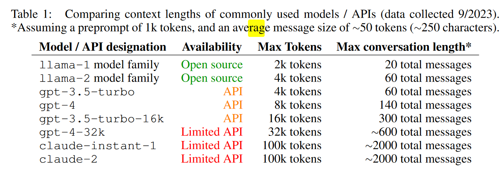
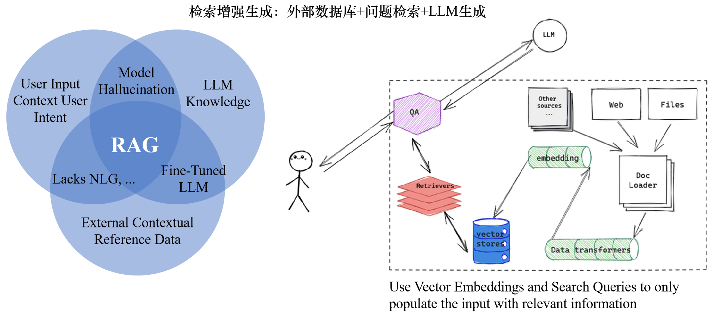
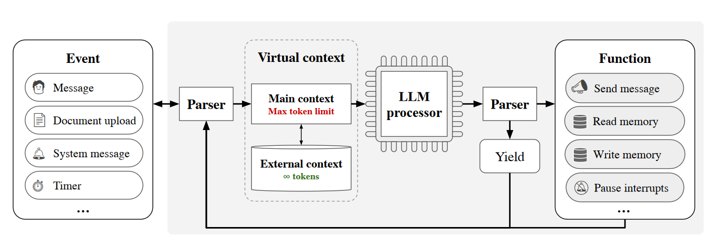
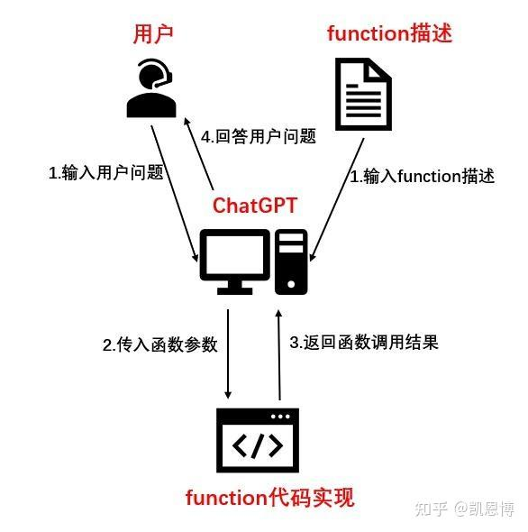
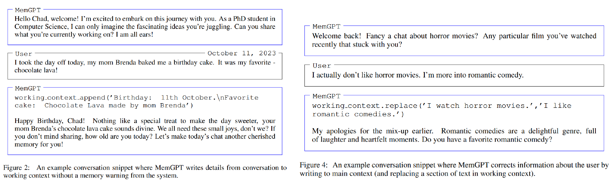
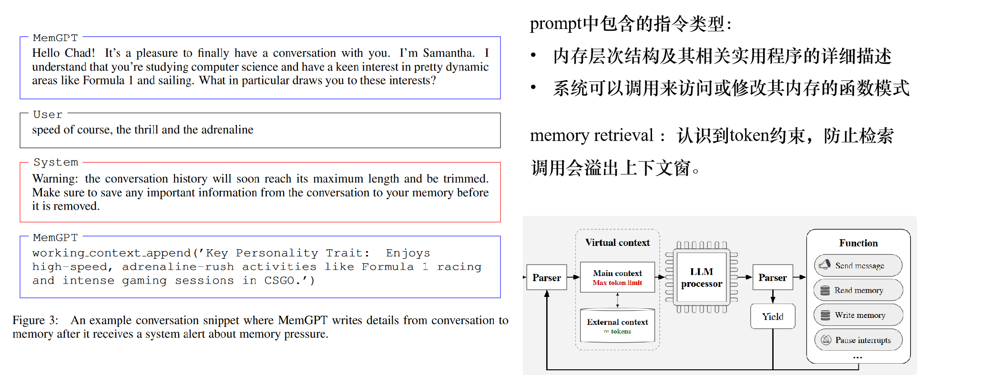
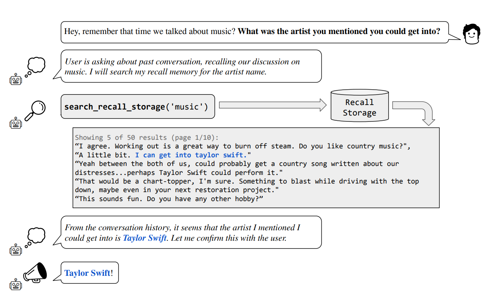
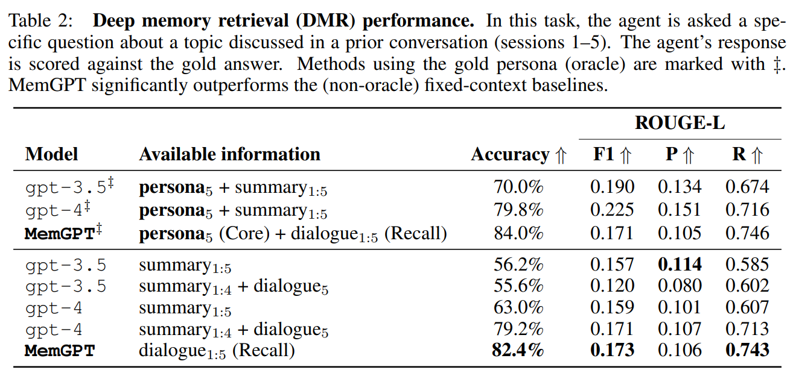
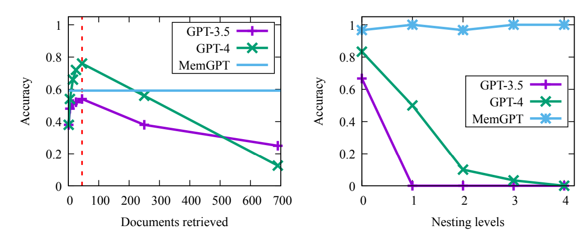
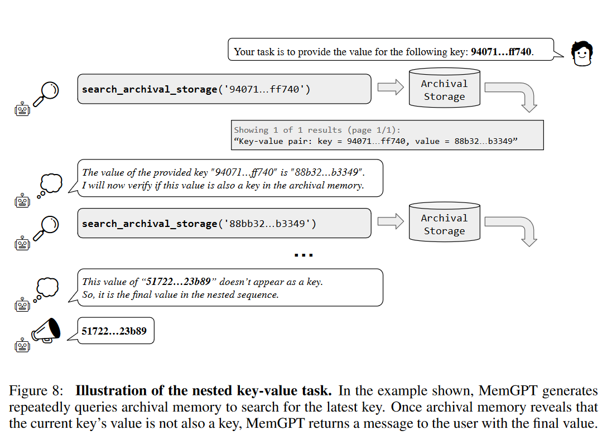

论文：MemGPT: Towards LLMs as Operating Systems
作者：Charles Packer, Vivian Fang, Shishir G. Patil
发表：Arxiv
大型语言模型（LLM）已经在人工智能领域引起了革命，但由于有限的上下文窗口限制，它们在处理扩展对话和文档分析等任务时受到了限制。为了能够利用超出有限上下文窗口的上下文，我们提出了虚拟上下文管理技术，这种技术借鉴了传统操作系统中的分层存储系统的思想，通过在快速内存和慢速内存之间移动数据来提供大内存资源的外观。利用这种技术，我们引入了MemGPT（Memory-GPT），这是一个智能地管理不同内存层级的系统，以在LLM的有限上下文窗口内有效地提供扩展上下文，并利用中断来管理自身与用户之间的控制流。我们在两个领域评估了我们受操作系统启发的设计，这两个领域是现代LLM的有限上下文窗口严重影响其性能的地方：文档分析领域，MemGPT能够分析超出基础LLM上下文窗口的大型文档；多会话聊天领域，MemGPT可以创建会话代理，通过与用户的长期互动记住、反思和动态演变。
背景介绍
LLM（大型语言模型）在处理输入文本时有长度限制，这个限制是由模型架构和可用的计算资源决定的。输入大小通常受到最大tokens数量的限制，最大标记限制是模型可以处理的单个输入序列中的最大标记数（单词或子词）。一旦达到这个限制，模型就无法处理额外的文本。由于预提示在指示系统行为中的重要性，预提示消耗超过一千个令牌是很常见的，这意味着许多现代 LLM 中的整个上下文窗口只需几十条来回消息就会耗尽。用户和系统之间。例如，当使用 llama-2 或 gpt-3.5-turbo 等 4K 上下文模型时，1000 个令牌预提示（大约是我们实验中 MemGPT 预提示的大小）只为大约 60 条剩余消息留下空间（有关更多示例，请参阅表 1） ）。在期望用户频繁与系统通信的设置中（例如，虚拟伴侣或个性化助理），很容易想象即使对于具有 100k 上下文窗口的模型，在几天（或可能是几小时）内也会超过最大对话长度）。递归摘要（Wu et al., 2021b）是解决上下文窗口溢出的一种简单方法，但是，递归摘要本质上是有损的，最终会导致系统内存出现大漏洞（正如我们在第 3 节中演示的那样）。这就需要一种更全面的方法来管理用于长期设置的会话系统的内存。

这个韦恩图显示了LLM的三个主要信息来源以及它们之间的关系。
- 用户输入上下文
- LLM已有知识
- 外部上下文参考数据：对外部上下文进行语义搜索和嵌入，可以确保从可用的外部语料库中返回上下文相关的数据
这里面存在四块共性区域：
- 幻觉：这是用户输入通过prompt直接提交给LLM的部分，因为没有上下文的参考，LLM会返回高度合理但实际错误的答案
- 缺少LLM： 这里用户输入与外部数据源直接结合，不存在自然语言生成模块。因此对话管理需要以状态机方式进行预定义，失去自然语言的弹性
- 微调：LLM可以根据外部数据进行微调，以适用于特定行业，但不会针对每个特定的用户输入进行挑战
- RAG（检索增强生成）结合了信息检索和生成模型，通过在提示中注入相关和上下文支持信息，可以帮助LLM对用户输入生成有说服力且上下文准确的响应。让LLM回答问题的过程中，先去检索外挂的数据库，并从中抽取到相关的知识，输入到自己的prompt里然后再去回答用户的问题。

MemGPT控制流程

MemGPT是一个RAG 应用，他把memory与工具使用两个部分桥接在一起，并且特别注重上下文内存的管理。在MemGPT（阴影部分）中，固定上下文LLM增加了分层内存系统和功能，能够管理自己的内存。用户输入的事件作为触发。LLM处理器将主上下文（类似于OS的主存储器/RAM）作为输入，并输出由解析器解释的文本，从而产生放弃或函数调用。MemGPT使用函数在主上下文和外部上下文（类似于操作系统磁盘内存）之间移动数据。当处理器生成函数调用时，它可以提前请求控制将函数链接在一起。当放弃时，处理器暂停，直到下一个外部事件（例如，用户发消息或程序中断）启动。
虚拟上下文管理
分层记忆系统
MemGPT采用了一个分层的内存管理系统，模仿了传统操作系统中的内存管理。内部存储分为主上下文（main context）和外部上下文（external context）。
主上下文
主上下文面向LLM直接访问，细分为系统指令、对话内容和工作内容三部分。
- 系统指令（system instructions）：是只读的，并且在MemGPT代理程序的生命周期内保持不变。
- 对话上下文（conversational context）：是只读的，并且有一个特殊的剔除策略（如果队列达到一定大小，会通过递归摘要（recursive summarization）来截断或压缩部分前端）。
- 工作上下文（working context）：可以通过函数调用由LLM处理器进行写入。这三个部分的总和不能超过LLM处理器的最大上下文大小。在实践中，会限制对话上下文和工作上下文的大小为一个固定的常数，该常数由处理器的上下文窗口和系统指令的长度决定。因此，MemGPT通过合理划分主上下文，并使用适当的剔除策略，实现了无限上下文记忆的效果。
外部上下文
外部上下文是指位于LLM处理器上下文窗之外的上下文外存储，类似于操作系统中的磁盘存储。LLM处理器不能立即看到外部上下文中的信息，但可以通过适当的函数调用将其带入主上下文。
在实践中，外部环境中的底层存储可以采取各种形式，这些形式可以针对特定任务进行配置：例如，对于会话智体，可能希望存储用户和智体之间的完整聊天日志（MemGPT稍后可以访问）；对于文档分析，大型文档集合可以存储在外部上下文中，MemGPT可以通过对磁盘的标页函数调用将其带入受限的主上下文。
在实验中，使用MemGPT进行多段聊天和文档分析，用数据库存储文本文档和嵌入/向量，为LLM处理器查询外部上下文提供了几种方法：基于时间戳的搜索、基于文本的搜索和基于嵌入的搜索。区分两种类型的外部上下文：1）调用存储（recall storage），它存储LLM处理器处理的事件整个历史记录（本质上是来自活动内存中完整未压缩队列）；归档存储（archival storage），它充当通用读写数据存储，可以将其用作上下文中读写核心内存的溢出。在会话智体的上下文中，归档存储允许MemGPT在主上下文的严格token限制之外存储关于智体或用户的事实、体验、偏好等，而通过调用存储进行搜索，允许MemGPT查找与特定查询或特定时间段内相关的过去交互历史。在文档分析的背景下，归档存储可以用于搜索（并添加到）扩展的文档数据库。
动态数据迁移
动态数据迁移是MemGPT的核心机制。简言之，系统让LLM可以自主地在主上下文和外部上下文之间移动数据,而无需外部干预。
MemGPT在LLM的prompt中提供了详细的Function Call说明。这些函数具有预定义的输入和输出格式。在每次推理时，LLM会根据当前上下文，主动调用这些函数来读取或修改记忆。当LLM需要引用过去的对话内容时，它可以调用搜索回忆存储的函数。该函数会在外部上下文中查找相关信息,并将结果页以明确格式返回到主上下文中。LLM就可以在当前的有限上下文里看到这些信息了。
类似地，LLM也可以主动调用写工作内容的函数,来将重要信息保存到外部上下文中。MemGPT使用解析器来验证和执行LLM生成的函数调用。并将执行结果反馈给LLM，这样可以训练LLM学习和调整自己的记忆策略。

LLM可以主动调用写/改工作内容的函数：

自主编辑和检索
MemGPT通过LLM处理器生成的函数调用来协调主上下文和外部上下文之间的数据移动。
内存编辑和检索完全是自主的：MemGPT根据当前文本自主更新和搜索自己的内存。例如，它可以决定何时在上下文之间移动条目，并修改其主上下文，更好地反映其对当前目标和职责不断演进的理解。在预提示中提供明确的指令，指导系统如何与内存系统交互，从而实现自主编辑和检索。这些指令包括两个主要组成部分：（1）内存层次结构及其相关实用程序的详细描述，以及（2）系统可以调用来访问或修改其内存的函数模式（包括其自然语言描述）。
在每个推理周期中，LLM处理器将主上下文（连接到单个字符串中）作为输入，并生成输出字符串。此输出字符串由MemGPT解析以确保正确性，如果解析器验证了函数参数，则执行函数。结果，包括发生的任何运行时错误（例如，当主上下文已经达到最大容量时，试图添加到主上下文），然后由MemGPT反馈给处理器。这种反馈回路使系统能够从其动作中学习并相应地调整其行为。上下文限制的察觉是使自编辑机制有效工作的一个关键方面，为此，MemGPT向处理器提示有关token限制的警告，指导其内存管理决策。此外，内存检索（memory retrieval ）机制设计为：认识到这些token约束，并实现分页，防止检索调用会溢出上下文窗。

智能中断机制
在实际任务中，经常需要按顺序调用多个函数，例如，在单个查询的多页结果中浏览，或者在独立查询的主上下文中整理来自不同文档的数据。函数链接允许MemGPT在将控制权返回给用户之前顺序执行多个函数调用。在MemGPT中，可以用一个特殊标志（flag）来调用函数，该标志请求在所请求的函数完成执行后立即将控制权返回给处理器。在传统的计算机系统中，中断是一种机制，允许硬件或软件暂停当前执行的任务，以便处理更紧迫或更重要的事情。借鉴这一概念，MemGPT在用户与模型的交互中引入了“智能中断”。
- 用户指令中断： 在与MemGPT的交互过程中，用户可以发送特定的指令来改变会话的方向或请求特定的上下文信息。例如，用户可能希望模型回顾之前的某个主题，或者暂时忽略某些信息。这些指令可以被看作是“中断”，它们使用户能够直接与模型的内部状态交互，实现更为灵活的会话管理。一个例子：假设用户在与MemGPT讨论天气时突然想知道关于某部电影的信息。用户可以直接发送一个指令如“转到昨天关于《星际穿越》的讨论”。MemGPT会识别这个“中断”，并迅速切换到与该电影相关的上下文。
- 上下文切换： 当用户发出中断指令时，MemGPT需要快速地调整其当前的上下文，以便满足用户的新请求。这就是所谓的“上下文切换”。例如，继续上面的情景，一旦用户请求回顾关于《星际穿越》的讨论，MemGPT会从其存储的历史上下文中检索该部分，并在当前会话中为用户呈现。
- 中断优先级： 不是所有的中断指令都有相同的优先级。有些请求可能比其他请求更紧迫或更重要。MemGPT通过为每个中断指令分配一个优先级来管理这些请求。当多个中断请求同时出现时，根据其优先级，MemGPT会决定首先处理哪一个，确保最关键的任务得到优先处理。例如，用户在与MemGPT的会话中同时发送了两个指令：“告诉我明天的天气”和“请提醒我5分钟后喝水”。尽管这两个指令都是中断，但“请提醒我5分钟后喝水”可能具有更高的优先级，因为它涉及到时间敏感性。
评估
多次会话场景
MemGPT在 Xu 等人引入的多会话聊天 (MSC) 数据集上评估 MemGPT 和固定上下文baseline。其中包含由人工标记者生成的多会话聊天日志，每个标记者都被要求在所有会话期间扮演一致的角色。 MSC 中的每个多会话聊天总共有五个会话，每个会话包含大约十几个消息。作为一致性实验的一部分，MemGPT创建了一个新会话（会话 6），其中包含相同两个角色之间的单个问答响应对。
在 多次会话场景中，用户向对话代理提出一个问题，该问题明确引用先前的对话，并且预期答案范围非常窄。
使用 ROUGE-L 分数和额外引入的“LLM 法官”来评估生成的响应与“黄金响应”的质量，“LLM 法官”被指示评估生成的响应是否与黄金响应一致。

当被问到只能依赖过去对话内容的问题时,MemGPT的正确率达到82.4%,明显优于固定上下文的GPT-3.5(55.6%)和GPT-4(79.2%)。MemGPT可以搜索外部存储的完整对话,而GPT只有递归摘要。

文档分析场景
文档的长度很容易超过token的限制，一些工作也已经发现大型上下文模型中的注意力分布不均匀（该模型更能够回忆起上下文窗口开头或结尾的信息，与中间的标记）

图1：对提出的问题的答案的准确性。x轴是检索的文档的数量，红线代表token的限制。可以看到GPT4的性能最开始是非常好的，但当超过上下文限制后，性能就会显著下降，GPT3.5的趋势也基本如此。但在MemGPT中，你需要检索多少个文档并不重要，性能、质量、准确性都能基本保持不变。
图2：嵌套查询的准确性。这个准确性取决于我们有多少嵌套级别。GPT3.5和GPT4的质量下降的非常快

如图所示，MemGPT 会重复查询存档内存以搜索最新密钥。一旦档案内存显示当前密钥的值不是密钥，MemGPT 就会向用户返回一条包含最终值的消息。
总结
作者利用针对函数调用进行微调的OpenAI GPT-4模型作为参考实现。目前，只有使用专门的GPT-4模型才能实现合理的性能，但预计未来的开源模型将改进以支持MemGPT式操作，可能通过更大的函数调用数据集的微调改进，或者更专业的函数调用数据集，或者提高基础模型的质量。
✉️ zjuvis@cad.zju.edu.cn